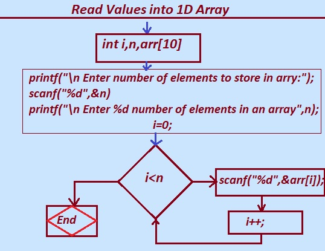
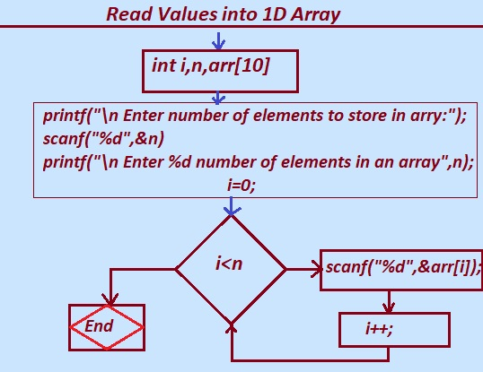

In this tutorial section we will learn how to Read Elements or values into One dimensional 1D array in C Language?.
C Programming Language has various Methods to read the elements into an array.
The methods discussed are as follows:
1. Using Standard Method
2. Using Function
3. Using Recursion
An array in C proramming is a group or a collection of same kind of values stored in Contiguous memory location ordered by index. The array Elements in array are stored according to the order the elements entered.
for e.g.
Let say we want to store 5 elements in an Array.
Enter any 5 number.
5
7
15
25
54
Elements in the Array are : 5 7 15 25 54
As we can see from the above example, we have to store 5 integer values, so we need the array variable to store the five elements.
The size of this array will be 5.
After that, the 5 values are entered for the array named n.
5 7 15 25 54
The Elements in the Array are : 5 7 15 25 54
We can closely observer that all the five elements will be printed as per the order they were entered into the array.
The same concept mentioned above is achived in c programming as follows.
Note: size and type of array can not be changed once it is declared.
1. Using Standard Method scanf()
scanf(): The scanf function reads the formatted data from the keyboard
and writes the data into the variable(memory location) passed as an argument in the function.
the scanf() is defined in the stdio.h header file.
Use of scanf() function provides the programmer with an option to give the runtime or dynamic input values.
Syntax :
int scanf(const char * format_string,&variable);
format_string: is a character string that contains format specifiers helps to decides the type of input values to be taken from standared input device(keyboard) or stream.
%d format specifier is used for integer values. e.g 1234,67895,
%c format specifier is used for character values. e.g. 'a' , 'B', 'P' etc.
%f format specifier is used for float values or fractional point values e.g 3.14,9.8 etc.
&variable: &variable is the address of variable where the value taken from the input is going to be stored pointed by the variable.
&variable is the address of the variable where we want to store the value.
Let Study the steps how to read and store the values into array.
Step 1: First of all we need to declare the essential variables
int i,n,arr[10];
variable n is the size of array,the number of values to be stored in an array.
variable i is the index of array.
and arr[10] is array variable declared to hold 10 integer number .
Step 2: printf("\n Enter the number of elements to store in an array\n");
scanf("%d",&n);
The statement prompt the message
"Enter the number of elements to store in an array".
scanf("%d",&n); Read the size of an array and store that value into the variable n.
for example we enter the value 5.
Step 3: printf("Enter %d number of elements an array : \n", n);
The printf() statement displays message.
"Enter 5 number of elements an array : "
Step 4: for(i=0;i<n;i++)
{
scanf("%d", &arr[i]);
}
The above for loop iterates or repeate 5 times and scanf() inside the loop read the array elements in arr[]
or in other words we can say the scanf() function reads the entered element and
initialize that element to arr[i] until all iterations (i<n) of for loop for(i=0;i<n;i++).
Note: Refere the complete program given below.
Scanf() standard Method to read values into an array
/* C program to read and store n integer number values in an array */
#include <stdio.h>
int main()
{
int i,n,arr[10];
printf("\n Enter the number of elements to store in an array\n");
scanf("%d",&n);
printf("Enter %d number of elements an array : \n", n);
for(i=0;i<n;i++)
{
scanf("%d", &arr[i]);
}
printf("\nElements in array are stored succesfully..: ");
return 0;
}
output:
Enter the number of elements to store in an array
5
Enter 5 values in the array:
10 21 65 89 53
Elements in array are stored succesfully..:
The program given above read 5 integer values and stores them in the array variable named arr.
Note:Refer the following flow diagram for more understanding and explanation.

Read or input values or elements into Array .
Let understand how to read elements or values into the array..
Given diagram is the flow digram that show how array elements is read and stored into the memory(into array variable arr[]).
Let understand the program that we studied above in detail from the given flow diagram.
i. we declare the variable i,n arr[10] as integer variable.
ii. The printf( "\n Enter number of elements to store in array ");
scanf("%d",&n);
prompt the user "Enter number of elements to store in array "
and scanf("%d",&n) store the entered value in variable n. (let say 5)
printf("Enter %d number of elements an array : \n", n);
the statement again prompt the message " Enter 5 number of elements an array :"
iii. Loop begins i is initialized to i=0 .
the condition i<n is tested .
The scanf("%d",&arr[i]) and i++ repeates till i<n.
for(i=0;i<n;i++)
{
scanf("%d", &arr[i]);
}
The for loop reads the 5 integer number entered and store them in arr variable.
Read and display Array values.
/* C program to read and display n integer number values in an array */
#include <stdio.h>
int main()
{
int i,n,arr[10];
printf("\n Enter the number of elements to store in an array\n");
scanf("%d",&n);
printf("Enter %d number of elements an array : \n", n);
for(i=0;i<n;i++)
{
scanf("%d", &arr[i]);
}
printf("\nThe Elements in Array are:\n ");
for(i=0;i<n;i++)
{
printf(" %d", arr[i]);
}
return 0;
}
output:
Enter the number of elements to store in an array
5
Enter 5 values in the array:
10 21 65 89 53
The Elements in Array are:
10 21 65 89 53
Explanation:
i. The for(i=0;i<n;i++)
{
scanf("%d", &arr[i]);
}
Loop given above read 5 integer values and stores them in the array variable named arr.
and the Second for loop
ii. for(i=0;i<n;i++)
{
printf(" %d", arr[i]);
}
Display the 5 integer values on output screen from the array variable named arr.
Previous Topic:-->> Access elements 1D Array in C || Next topic:-->> 2D Array in C.
Other Topics:
Variables and Identifiers
Relational Operators
if-else statements
Switch case
While Loop
Infinite while Loops
C FOR Loop
Infinite for Loops
Continue in Loops
One Dimensional Array
Two Dimensional Arrays
Read and Display 2D Arrays
Types of functions
Passing Array To Functions
Nesting of Function
Array vs Structure
Array of Structure
Structures and Functions
Structures Within Structures
Use Of Pointers In C
File Handling In C
Loops FAQ
Arrays FAQ
count vowels in a file
Function FAQ
Conditional Statements Assignments
For Loops Assignments
Arrays Assignments
Function Assignments
Structure Assignments
Pointers Assignments
Files Assignments
Storage classes Assignments
Binary Files
count words,lines in a file
Copy files
Update File
Continue in Loops
break in Loops
Difference Between While and Do while
difference while do..while & for
malloc
calloc
Storage Classes
Operators MCQ
Conditional Statements MCQ
Loops MCQ
Arrays MCQ
Function MCQ
Structure MCQ
Pointers MCQ
Files MCQ
Storage classes MCQ
/* C program to read and store n integer number values in an array */
#include <stdio.h>
int main()
{
int i,n,arr[10];
printf("\n Enter the number of elements to store in an array\n");
scanf("%d",&n);
printf("Enter %d number of elements an array : \n", n);
for(i=0;i<n;i++)
{
scanf("%d", &arr[i]);
}
printf("\nElements in array are stored succesfully..: ");
return 0;
}
output:
Enter the number of elements to store in an array
5
Enter 5 values in the array:
10 21 65 89 53
Elements in array are stored succesfully..:
The program given above read 5 integer values and stores them in the array variable named arr.
Note:Refer the following flow diagram for more understanding and explanation.

Read or input values or elements into Array .
Let understand how to read elements or values into the array..
Given diagram is the flow digram that show how array elements is read and stored into the memory(into array variable arr[]).
Let understand the program that we studied above in detail from the given flow diagram.
i. we declare the variable i,n arr[10] as integer variable.
ii. The printf( "\n Enter number of elements to store in array ");
scanf("%d",&n);
prompt the user "Enter number of elements to store in array "
and scanf("%d",&n) store the entered value in variable n. (let say 5)
printf("Enter %d number of elements an array : \n", n);
the statement again prompt the message " Enter 5 number of elements an array :"
iii. Loop begins i is initialized to i=0 .
the condition i<n is tested .
The scanf("%d",&arr[i]) and i++ repeates till i<n.
for(i=0;i<n;i++)
{
scanf("%d", &arr[i]);
}
The for loop reads the 5 integer number entered and store them in arr variable.
Read and display Array values.
/* C program to read and display n integer number values in an array */
#include <stdio.h>
int main()
{
int i,n,arr[10];
printf("\n Enter the number of elements to store in an array\n");
scanf("%d",&n);
printf("Enter %d number of elements an array : \n", n);
for(i=0;i<n;i++)
{
scanf("%d", &arr[i]);
}
printf("\nThe Elements in Array are:\n ");
for(i=0;i<n;i++)
{
printf(" %d", arr[i]);
}
return 0;
}
output:
Enter the number of elements to store in an array
5
Enter 5 values in the array:
10 21 65 89 53
The Elements in Array are:
10 21 65 89 53
Explanation:
i. The for(i=0;i<n;i++)
{
scanf("%d", &arr[i]);
}
Loop given above read 5 integer values and stores them in the array variable named arr.
and the Second for loop
ii. for(i=0;i<n;i++)
{
printf(" %d", arr[i]);
}
Display the 5 integer values on output screen from the array variable named arr.
Previous Topic:-->> Access elements 1D Array in C || Next topic:-->> 2D Array in C.
Other Topics:
Variables and Identifiers Relational Operators if-else statements Switch case While Loop Infinite while Loops C FOR Loop Infinite for Loops Continue in Loops One Dimensional Array Two Dimensional Arrays Read and Display 2D Arrays Types of functions Passing Array To Functions Nesting of Function Array vs Structure Array of Structure Structures and Functions Structures Within Structures Use Of Pointers In C File Handling In C Loops FAQ Arrays FAQ count vowels in a file Function FAQ Conditional Statements Assignments For Loops Assignments Arrays Assignments Function Assignments Structure Assignments Pointers Assignments Files Assignments Storage classes Assignments Binary Files count words,lines in a file Copy files Update File Continue in Loops break in Loops Difference Between While and Do while difference while do..while & for malloc calloc Storage Classes Operators MCQ Conditional Statements MCQ Loops MCQ Arrays MCQ Function MCQ Structure MCQ Pointers MCQ Files MCQ Storage classes MCQ